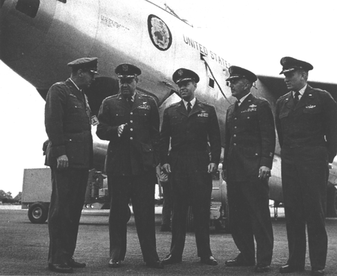

LeMay naît à Columbus (Ohio) en 1906. Il étudie aux écoles publiques de Columbus et à
l'Université de l'Ohio, où il obtient un bachelor of civil engineering.
En il entre dans l'armée comme cadet de vol. Il achève son entraînement de pilote à Kelly Field
(Texas), et est affecté comme second lieutenant du Corps de Réserve Aérien en . Il reçoit une
affectation régulière en .
LeMay commence son service au 27ᵉ Escadron de Poursuite à Selfridge Field (Michigan). Il
est affecté à diverses opérations de chasse avant d'être transféré au bombardement en . Il participe
au vol massif de Forteresses Volantes B-17 vers l'Amérique du Sud en . Avant l'entrée des Etats-Unis
dans la seconde guerre mondiale, il ouvre des routes aériennes au-dessus de l'Atlantique Sud vers l'Afrique et
au-dessus de l'Atlantique Nord vers l'Angleterre.
La guerre
De gauche à droite : McCoy, LeMay, Selser, Mooney et Tarter, devant un B-47 du 306ème Bomb Wing, à la base de
Fairford (Angleterre) USAF

Surnommé "vieux pantalon de fer" en raison de ses nombreuses missions américaines en vol, LeMay organise et
entraîne le 305ème Groupe de Bombardement en 1942 et le dirige au combat dans le théâtre des opérations en Europe.
Il développe des procédures de formation et des techniques de bombardement accroissant la précision et réduisant les
pertes. Elle seront utilisées par les unités de bombardement B-17 en Europe, puis par les Super-Forteresses B-29 qui
achèveront la guerre dans le Pacifique.
En tant que général commandant de la 3ème Division de Bombardement (Angleterre), il dirige le fameux raid
Regensberg, une mission de navette B-17 qui parti d'Angleterre, frappa lourdement en Allemagne et termina en
Afrique. En il est transféré dans le Pacifique pour diriger les lourdes activités de
bombardement B-20 du 20ème Commandement de Bombardement dans le théâtre Chine-Birmanie-Inde, remplacé en 1945-1 par
le général Ramey. Par la suite il commande le 21ème Commandement de Bombardement
dont le Q-G est à Guam, et devient plus tard chef d'état-major des Forces
Aériennes Stratégiques dans Pacifique. A la fin de de la seconde guerre mondiale, il retourne aux Etats-Unis.
La première affectation après-guerre de LeMay est au Q-G de l'AMC. Il
est alors transféré au Pentagone à Washington, pour être le premier chef d'Etat-Major Adjoint du Personnel Aérien
pour la Recherche et Développement. Le — comme le confirment les archives du Pentagone
— LeMay rencontre Hoyt Sanford Vandenberg au sujet des soucoupes volantes.
En effet, depuis l'observation de Kenneth E. Arnold, le 24 Juin de la même année, la
presse consacre un bon nombre d'articles à ces mystèrieux objets parcourant le ciel américain.
En 10 LeMay est choisi pour commander l'USAF en Europe dont le Q-G est à Wiesbaden
(Allemagne). Il organise les opérations aériennes pour le fameux pont aérien de Berlin.
Le SAC (1948-1957)
Le , prêts à embarquer dans un B-36, LeMay, le sénateur Russell (Georgie), le général Roger M. Ramey, le major John Bartlett, le Sécrétaire de l'USAF Symington, Lyndon Baines Johnson (alors sénateur du Texas), et le représentant Thornberry [Frank Kleinwecther]
En il revient aux Etats-Unis pour prendre le commandement du SAC. Celui-ci a été créé quelques temps auparavant, mais c'est réellement sous
le commandement de LeMay qu'il va prendre toute sa dimension. LeMay établit son Q-G à la base de l'USAF de Offutt
(Nebraska), qui va devenir le centre nerveux d'une force mondiale de bombardement par missiles.
LeMay construit une force de bombardement à réaction, pilotée et supportée par des professionnels dédiés à la
préservation de la paix. Sous son commandement qui durera presque 10 ans, le SAC développera et intègrera également sa capacité ICBM.
Au début de , les Etats-Unis sont préoccupés par la Guerre de Corée en particulier et la Guerre
Froide en général. Joseph Staline n'est pas encore mort. Ils ont des confrontations
presques journalières avec les Communistes quelque part dans le monde. Une nouvelle arme de terreur vient juste
d'être introduite dans la course à l'armement — la bombe à hydrogène. LeMay alerte ses autorités du
fossé qui se creuse en terme en capacité de bombardement.
Etat-Major de l'USAF
En 1957-7 LeMay est nommé vice-chef d'état-major de l'USAF. En 1961-7 il est devient le 5ème chef d'état-major,
jusqu'au 1965-2-1, où il quitte l'armée.
David Adair déclare avoir rencontré LeMay en sur la Zone 51.
![Le 19 Novembre 1949, prêts à embarquer dans un B-36, LeMay, le sénateur Russell (Georgie), le général Roger Ramey, le major John Bartlett, le Sécrétaire de l'USAF Symington, Lyndon Baines Johnson (alors sénateur du Texas), et le représentant Thornberry [Frank Kleinwecther]](/time/1/9/4/9/11/19/LeMayCurtis-Russel-RameyRogerM-BartlettJohn-Symington-LyndonJohnson-Thornberry.jpg)